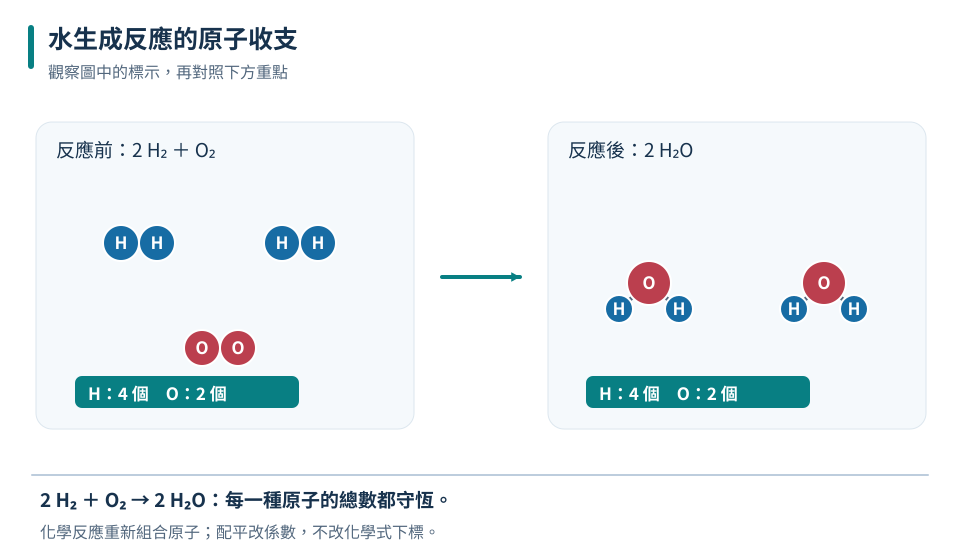
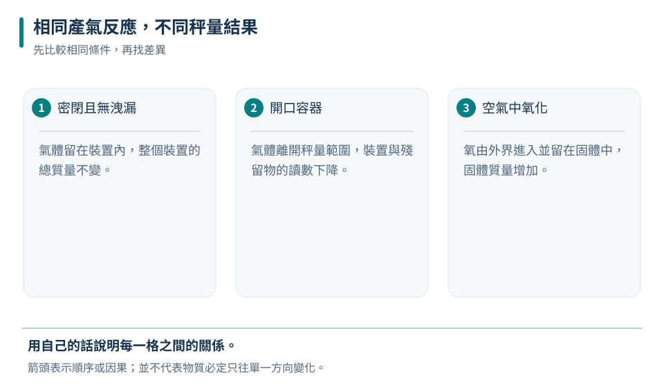
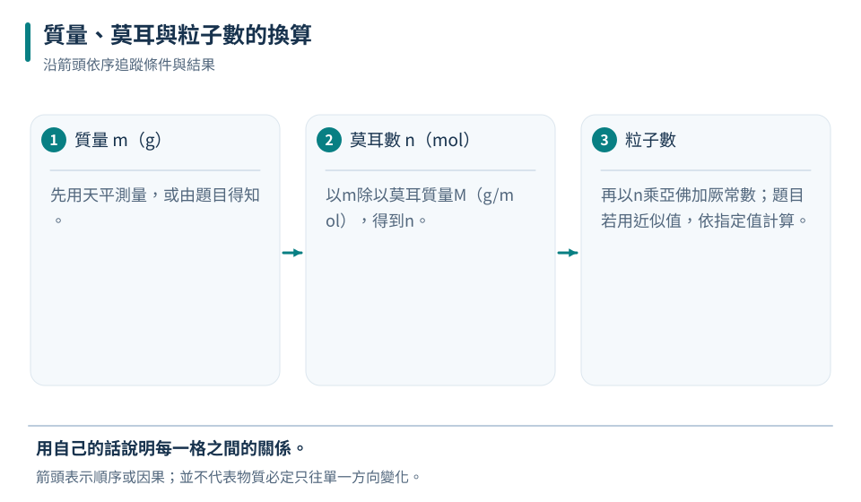
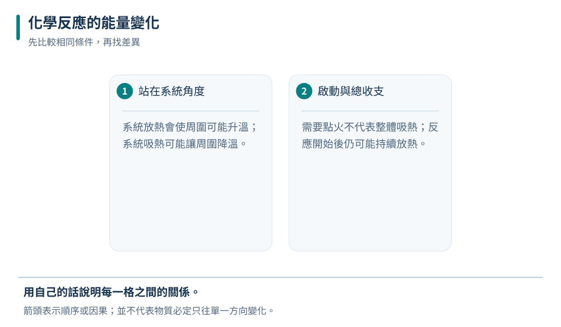

氣泡只是線索
沸騰氣泡常是水蒸氣；需確認新物質才能確定化學變化。
八下 · 化學 · 第 1 章
鐵生鏽、瓦斯燃燒和酸遇到小蘇打，都涉及原子重新組合。你將從現象判斷反應證據，學會讀寫平衡反應式，再用質量守恆、原子量與莫耳連接微觀粒子和可秤量的物質，並分辨反應吸收或放出的能量。
先備概念：能讀元素符號與化學式、會計算比例與化學式中的原子數
LEARN & EXPLAIN
化學反應會產生不同於原來的新物質。顏色改變、氣體生成、沉澱或溫度變化都可能是線索，但不能只看單一現象：水煮沸也有氣泡，冰融化也會吸熱。較可靠的方法是結合反應條件、前後物質性質與多種觀察，判斷是否形成新物質。
化學反應式以箭號左側寫反應物，右側寫生成物。平衡反應式的目標是讓兩側每種元素原子數相等，只能調整化學式前的係數，不能任意改下標。反應條件如加熱可註在箭號附近。係數表示粒子數比或莫耳數比，不會直接等於各物質的質量比。
沸騰氣泡常是水蒸氣；需確認新物質才能確定化學變化。
逐元素計數，調整係數，最後再逐項核對；通常用最簡整數比。

係數調整整個粒子數量，不改變H₂、O₂或H₂O本身的組成。
2Mg＋O₂→2MgO；鎂原子與氧原子在兩側都各2個。
把MgO改成MgO₂雖可湊氧原子數，卻改變了生成物，這不是平衡反應式。
LEARN & EXPLAIN
一般化學反應中，原子沒有憑空消失或出現，因此若把所有反應物、生成物及未反應物都計入，反應前後總質量相同。實驗最容易漏掉氣體：開口容器產生氣體逸出時，秤到的質量會下降；金屬在空氣中氧化時，固體可能因結合空氣中的氧而增重。
使用密閉裝置可以讓質量收支更容易追蹤，但「密閉」不代表任何操作都安全，會產氣或燃燒的反應需用合適裝置與教師指導。計算時還要分清楚「原先加入量」與「真正反應量」，若有一種原料過量，剩餘原料不能當作生成物的質量。
判斷氣體有沒有進出被秤量的系統，才知道讀數為何變化。
生成物質量＝實際消耗的反應物質量總和；總秤量還包含剩餘物。

質量守恆需要計入邊界內外物質的移動。
逸出氣體為2.2 g；不是質量消失。
秤到變輕不代表違反守恆；先找離開秤量範圍的物質。
LEARN & EXPLAIN
原子量是用統一基準比較原子質量的相對數值，計算時以題目給定值為準。分子量是組成一個分子的原子量總和；對不以獨立分子存在的離子化合物，可稱式量。原子量、相對分子量與式量本身沒有g單位；一個水分子也不是重18 g。
莫耳是粒子數量的單位，1 mol約含6.02×10²³個指定粒子。使用時必須說明數的是原子、分子還是化學式單位。若H＝1、O＝16，H₂O的分子量是18，水的莫耳質量便是18 g/mol。質量除以莫耳質量得到莫耳數，莫耳數乘以反應係數比例可以比較反應需求。
分子量18、莫耳質量18 g/mol、樣品質量18 g，意義不同。
1 mol CO₂分子含1 mol碳原子和2 mol氧原子。

反向換算時依序除以亞佛加厥常數、乘以莫耳質量。
水分子2 mol，氫原子4 mol。
1 mol不同物質有相同指定粒子數，但質量通常不同。
LEARN & EXPLAIN
化學反應伴隨能量轉移。以正在反應的物質作為系統，反應整體向環境釋出能量稱放熱反應；由環境吸收能量稱吸熱反應。環境溫度上升常支持放熱，下降常支持吸熱，但必須排除外部加熱、散熱與物理溶解等因素，不能只憑摸起來熱或冷就斷定反應種類。
放熱反應也可能需要先點火或加熱才能開始，例如木材燃燒。起始能量幫助反應越過門檻，與反應整體最後放出或吸收多少能量是不同問題。化學鍵的斷裂需要能量，新鍵形成會釋出能量；兩者加總的結果才決定反應整體吸熱或放熱。
系統放熱會使周圍可能升溫；系統吸熱可能讓周圍降溫。
需要點火不代表整體吸熱；反應開始後仍可能持續放熱。
| 測試 | 反應前水溫 | 反應後水溫 | 可支持的推論 |
|---|---|---|---|
| 甲 | 25°C | 31°C | 反應使環境升溫，支持放熱 |
| 乙 | 25°C | 20°C | 反應使環境降溫，支持吸熱 |

假設測溫位置、散熱與混合方式相同；溫差不是直接等於能量。
整體放熱30個能量單位；斷鍵本身仍要吸能。
不是「斷鍵放熱」；斷鍵吸能、成鍵釋能，總差額決定反應熱。
TRY, OBSERVE, EXPLAIN
REVIEW
沸騰氣泡常是水蒸氣；需確認新物質才能確定化學變化。
回到這一節複習判斷氣體有沒有進出被秤量的系統，才知道讀數為何變化。
回到這一節複習分子量18、莫耳質量18 g/mol、樣品質量18 g，意義不同。
回到這一節複習系統放熱會使周圍可能升溫；系統吸熱可能讓周圍降溫。
回到這一節複習CHAPTER TEST
先獨立作答，再看解析。中難與難為編者估計，尚未經學生實測校準。